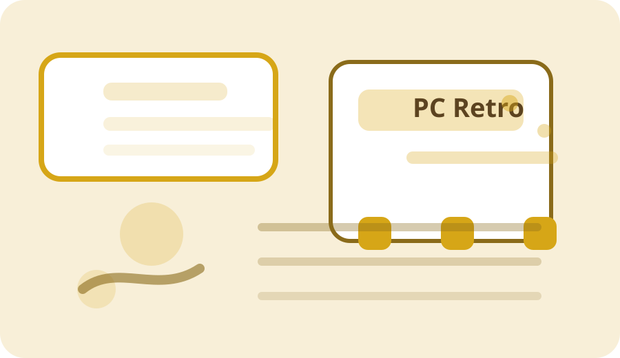

Historia
De los primeros chips a la clase
Introduce la evolución de la arquitectura de computadores, desde los primeros procesadores hasta los microcontroladores, con contexto para el curso.
Microsite educativo
Una mini-guía visual para el curso: historia, conceptos clave y una ruta única hacia los temas principales.
Navega desde un solo punto de entrada y explora Fundamentos, EMU8086 o Arduino sin repetir accesos.

Historia
Introduce la evolución de la arquitectura de computadores, desde los primeros procesadores hasta los microcontroladores, con contexto para el curso.
Conceptos
Explica los conceptos clave de manera clara: qué es la arquitectura, cómo se organiza el hardware y por qué es importante en sistemas reales.
Temas